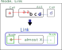
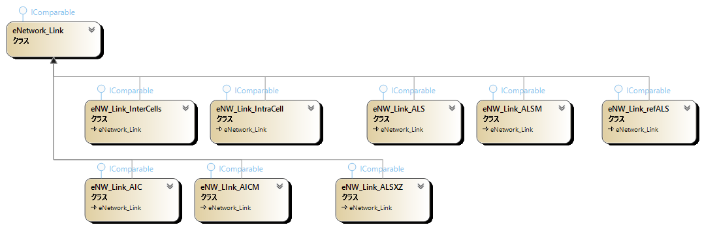
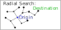

GNPX v5- の リンクの表記、クラス、アルゴリズムなどの概要(ヒント）を示します。正確な理解は、GNPX のコードを読み解くことが必要です。
なお、整理途上であり、一貫性が完成していません。
eNetwork
- リンクを連結する仕組みを、”eNetwork (eNW)”と呼ぶことにします。
- リンク : セル間リンク、セル内リンク、ALSリンク、AICリンク...などをまとめる名称として使います。
(1) ULogical_Node
eNetworkにおける基本要素のクラスです。セルおよびセル群の"位置・数字・状態（肯定または否定）"の属性を持ちます。
(2) eNetwork_Node
- セルおよびセル群と、属性値を持ちます。
- 状態属性値は、肯定(+)または否定(-)を持ちます。 (Ver4.0までは、真(true) 偽(false)と表記していましたが、変更します。)
- ノードは接続するリンクの情報を持ちます。リンク終端ノードの状態属性は肯定または否定、あるいは両方です。
ノードの状態属性が肯定かつ否定の場合は矛盾であり、前提となる命題は偽（false)です。
(3) eNetwork_Link
- eNetwork_Linkクラスは、起点ノード、終点ノード、次接続ノードと、ネットワークを組み立てるための共通の属性を持ちます。
 - リンク派生クラスは、それぞれに元となるLockedパターンがあります。これに要素を加えて Almost 化して作られています。
eNW_Link_InterCells, eNW_Link_IntraCell, eNW_Link_ALS, eNW_Link_ALSM,
eNW_Link_refALS, eNW_Link_AIC, eNW_Link_AICM, eNW_Link_ALSXZ, ... (今後、拡大する。おそらく。)

(4) GNPX v6- の ノード、リンクの実装
数独の1局面の解析中は、ノードは属性値を動的に管理します
確定したノードにリンクが接続すると、終端側ノードの状態属性値が確定し(+/-)、ノードをリスト(peNetwork_NodeList)に登録します。
ネットワークの探索で、複数経路でノードの状態属性値(+/-)が決まるとき、属性値が同じならその先の探索は省略できます。
不一致の場合は矛盾であり、前提となる命題は偽（false)です。
複数経路を処理するために、リンクの両端のノードは状態属性を持たず、ネットワークのノードの状態属性を別途管理する方法を 採用しました。
（これはGNPXの実装方法です。別の方法もあります。）
(5) ネットワーク探索
起点となるノードの状態属性が定まると、これに接続するリンクを延長して、さらに延長して、... ネットワークができます。
このネットワークによって Locked が形成されることがあります。すなわち、数独解析アルゴリズムです。
ネットワーク探索には、放射型とループ型の2つのタイプがあります。
- 放射型ネットワーク探索アルゴリズム:
- 起点となるノードに接続する全てのリンクについて、終端側のノードの状態属性を求める。
- ノードが未登録なら、ノードと状態属性に登録する。また、次探索Queueに登録する。
- ノードが登録済みで、状態属性が一致するなら、何もしない。
- ノードが登録済みで、状態属性が不一致なら、"矛盾" 発見で終了する。
- 目標とするノードに達したら、あるいはQueueが空なら、終了する。
そうでないなら、Queueからノードを取り出し 1 から繰り返す。
